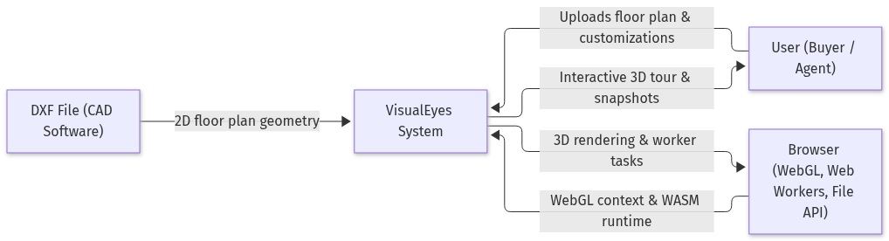
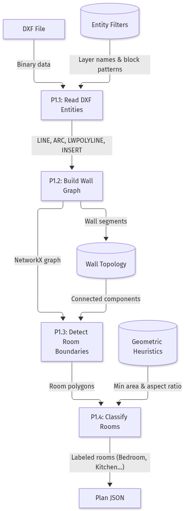
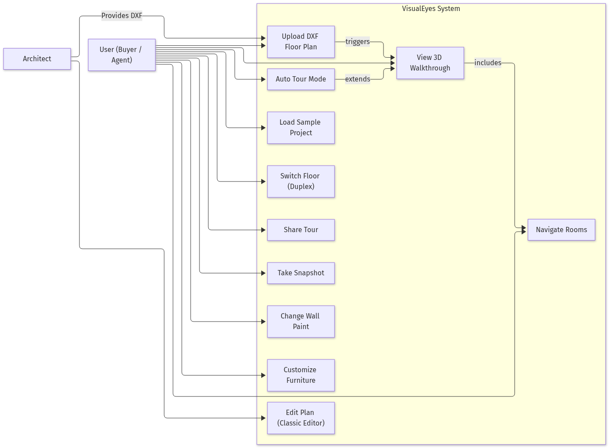
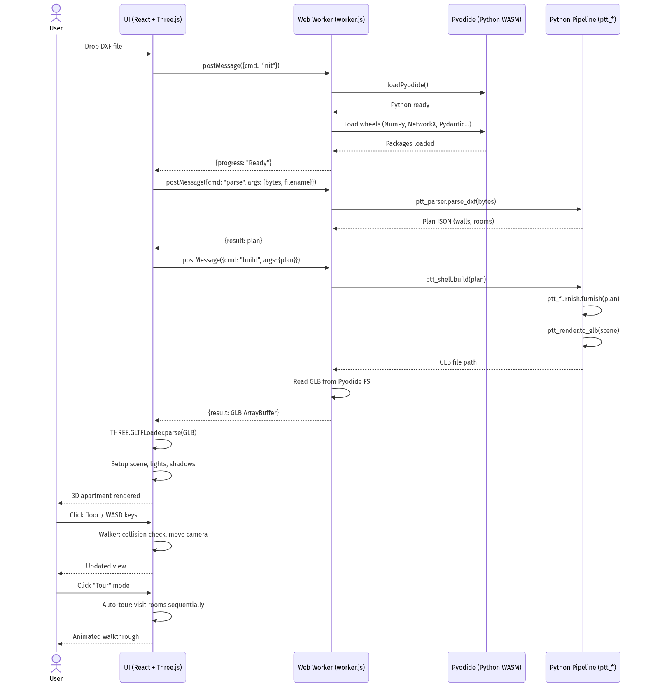

Data Flow Diagrams & System Models¶
Context Diagram (Level 0 DFD)¶
The context diagram illustrates VisualEyes as a single system boundary interacting with its external entities.

External Entities:
- User — Uploads DXF floor plans, customizes furniture/paint, and navigates the 3D tour
- DXF File — Input 2D CAD floor plan exported from architectural software
- Browser — Provides WebGL context, Web Workers, and the File API
Level 1 DFD¶
The Level 1 DFD decomposes VisualEyes into its four core processing stages and supporting data stores.

Processes:
- P1: Parse DXF (
ptt_parser) — Reads binary DXF data, extracts geometric entities, and identifies rooms - P2: Build Shell (
ptt_shell) — Extrudes 3D wall, floor, and ceiling geometry from the plan model - P3: Furnish Rooms (
ptt_furnish) — Places furniture based on room classification and spatial constraints - P4: Render Tour (
ptt_render) — Assembles the GLB 3D scene with PBR materials and camera tour paths
Data Stores:
- D1: Plan Model — Intermediate JSON representation of walls, openings, and rooms
- D2: Scene Graph — Combined 3D shell and furniture geometry
- D3: Furniture Library — Catalog of furniture items, dimensions, and placement rules
- D4: Material Library — Surface materials, textures, and paint color palettes
Level 2 DFD — Parser Subsystem¶
The Level 2 DFD expands P1 (Parse DXF) into its internal sub-processes.

Sub-processes:
- P1.1: Read DXF Entities — Extracts
LINE,ARC,LWPOLYLINE, andINSERTentities using layer/block filters - P1.2: Build Wall Graph — Connects line segments into a topological wall graph using NetworkX
- P1.3: Detect Room Boundaries — Identifies closed polygons representing individual rooms
- P1.4: Classify Rooms — Labels rooms (
BEDROOM,KITCHEN,BATHROOM,LIVING, etc.) using area, aspect ratio, and openings
Use Case Diagram¶

Sequence Diagram¶

End-to-End Execution Flow:
- User drops a
.dxffile in the UI - UI sends
init(first run) andparsecommands toworker.js - Web Worker boots Pyodide, loads WASM wheels, and runs
ptt_parser - UI receives the parsed Plan JSON and triggers
build - Pipeline executes
ptt_shell->ptt_furnish->ptt_renderto produce a.glbfile - Worker reads the
.glbfrom Pyodide FS and transfers theArrayBufferto the main thread - Three.js parses the GLB with
GLTFLoaderand renders the interactive 3D tour